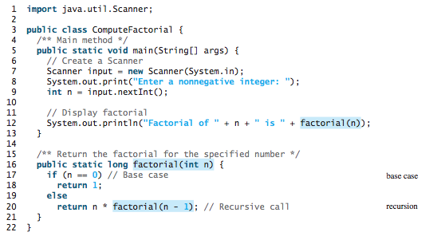
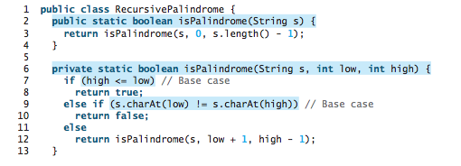
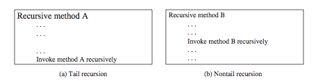
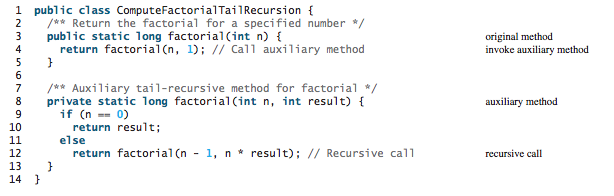

CS203: Programming with Data Structure
Lecture 2
Reading assignment: chapter 18
Lesson Objectives
- To describe what a recursive method is and the benefits of using recursion
- To develop recursive methods for recursive mathematical functions
- To explain how recursive method calls are handled in a call stack
- To solve problems using recursion
- To use an overloaded helper method to design a recursive method
- To discover the relationship and difference between recursion and iteration
- To know tail-recursive methods and why they are desirable
What is Recursion?
Recursion is a technique that leads to elegant solutions to problems that are difficult to program using simple loops.
Recursive methods are methods that invoke themselves.
Compute Factorial
Let us compute $f(n) = n!$
Note that the base case are also known as the stopping condition.
Thinking Recursion
All recursive methods have the following characteristics:
- The method is implemented using an if-else or a switch statement that leads to different cases.
- One or more base cases (the simplest case) are used to stop recursion.
- Every recursive call reduces the original problem, bringing it increasingly closer to a base case until it becomes that case.
To solve a problem using recursion, you break it into subproblems. Each sub-problem is the same as the original problem but smaller in size. You can apply the same approach to each subproblem to solve it recursively.
Recursive Helper Methods
Sometimes you can find a solution to the original problem by defining a recursive function to a problem similar to the original problem. This new method is called a recursive helper method. The original problem can be solved by invoking the recursive helper method.
In the above example isPalindrome(...) has two function signatures, the second method is said to be the "helper method" to assist the first method by overloading its parameters.
Recursion vs. Iteration
Recursion is a loops without the repitition of a control statement. Here are some characteristics of recursion (when comparing with iterations):
- All recursive algorithm can be solved nonrecursively with iterations.
- Recursions has overheads because entry into methods require new scope, thus overheads.
- Recursion can help obtain clear, simple solution for an inherently recursive problem that would otherwise be difficult to obtain.
- Recursion is often more elegant.
Tail Recursion
Tail recursion is an different approach to recursion. The general idea is to improve performance. Tail recursion occurs when there is no more pending operations when returning from a recursive function call.
Let's transform the factorial example from non-tail to tail recursive method.

Lab Exercises
For each of the following exercises, practice developing and running your program with Eclispe. Note that the lab assignments are not graded.
- Write a recursive mathematical definition for computing $x^n$ for a positive integer $n$ and a real number $x$. Then write a corresponding Java program.
- Write a recursive method reverseDisplay(String s) that reverses the order of $s$.
- Write a recursive method reverseDisplay(int k) that reverses digit of $k$.